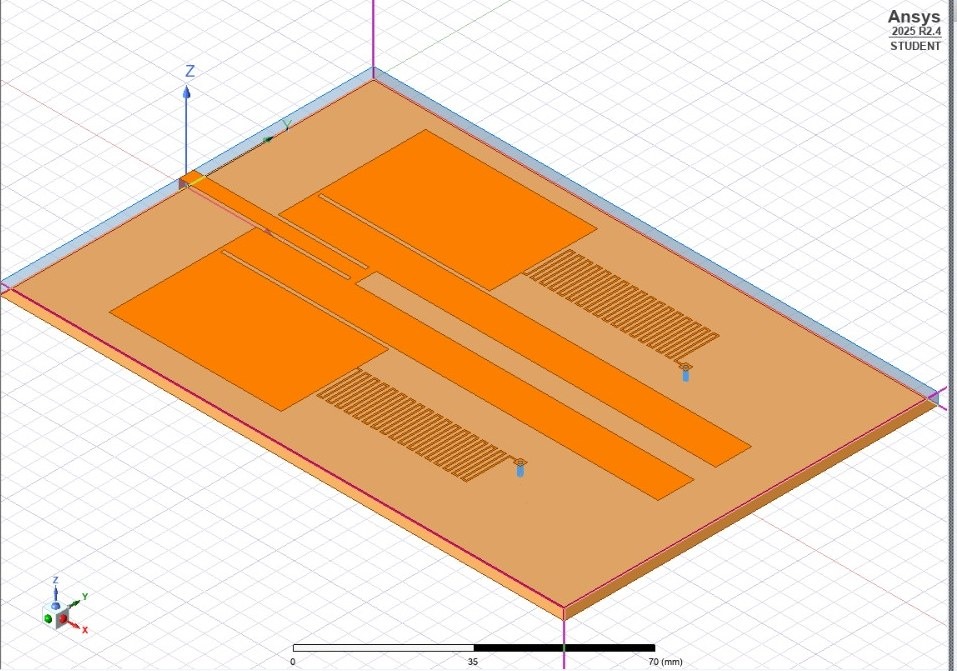
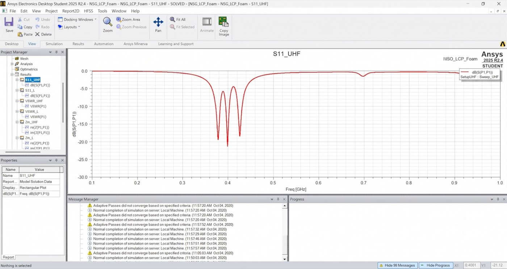
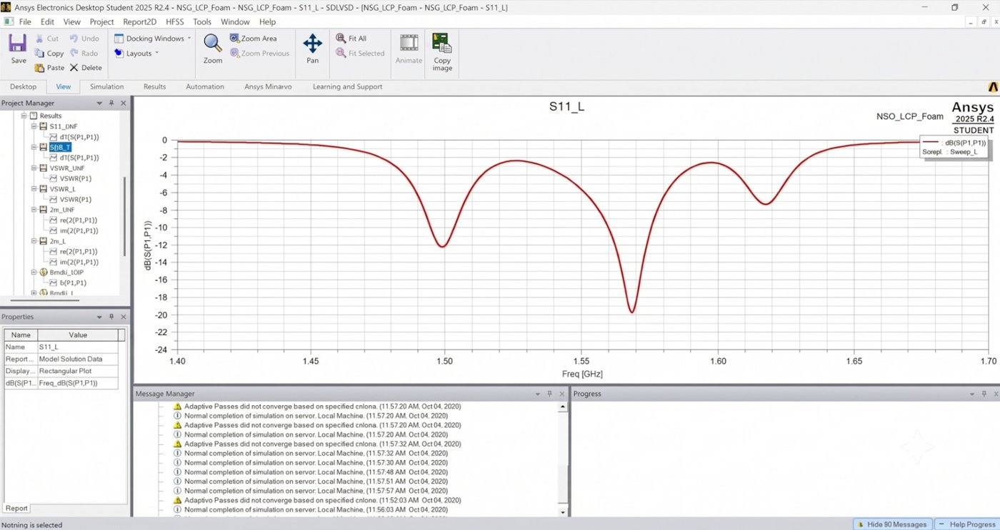
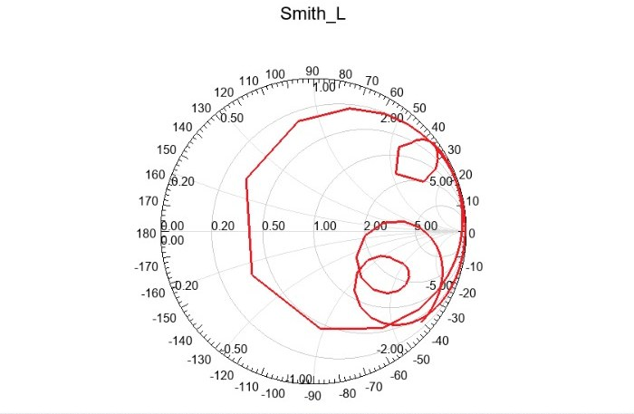

An antenna built into the helmet
A flexible dual-band array antenna for soldiers in urban close-quarter battle, replacing the whip antenna. This page records what we read, what we tried and why we chose the final design.
The problem
Soldiers clearing buildings need audio and video links that work inside reinforced concrete. Vest-mounted whip antennas get in the way and attenuate badly indoors.
- Whip antennas snag on doors, gear and debris.
- Signal drops inside concrete, and a single antenna creates dead zones from multipath.
- Exposed electronics are easy to damage.
Our target: UHF (300–500 MHz) for audio and L-band (1–2 GHz) for video, from a low-profile flexible array on the helmet. The problem statement asks for an array antenna.
What we studied
Open a paper for a one-minute summary and how it shaped our design.
| Paper | Why it matters to us |
|---|---|
| Lightweight, High-Bandwidth Conformal Antenna System for Ballistic Helmets | Shows a conformal antenna can sit on a ballistic helmet. |
| Ultra-wideband Conformal Helmet Antenna | Wideband helmet antenna; defines the bandwidth benchmark. |
| Reconfigurable Dual-Band Capsule-Conformal Antenna Array | Our reference for a dual-band array on a flexible substrate. |
Patents and defence work
- C. G. Wong, stick-on multi-frequency Wi-Fi backpack and helmet antenna, U.S. Patent 9,413,060 (2016): architecture reference for a multi-frequency conformal antenna.
- U.S. Dept. of Defense SBIR Award #105304, Conformal Antennas for Tactical Communications: shows military interest in this transition.
Standards
- MIL-STD-810H: shock, vibration and ruggedisation limits for the helmet assembly.
- IEEE C95.1-2019: human RF exposure and SAR limits.
Books
- C. A. Balanis, Antenna Theory: Analysis and Design (ch. 2, 14).
- Girish Kumar and K. P. Ray, Broadband Microstrip Antennas (ch. 2–6).
How we got here
- Whip antennaSnags, loses signal in concrete and is easily damaged. This is the problem we are replacing.
- Stacked U-slot patchGave dual-band operation in a thin stack, but it is a single element. Dropped because the problem statement requires an array.
- Metamaterial PIFA with split-ring resonatorsShrank the UHF element well, but again a single element. Dropped for the same reason.
- Dual-band arrayTakes the mirrored dual-band element idea from the capsule array paper and the flexible-substrate approach, built for the helmet.
Our solution
- An array of dual-band elements around the helmet, so one element always faces the link.
- Each site splits UHF and L-band with a passive diplexer.
- Switches choose the strongest element using received signal strength (RSSI).
- Low-noise amplifiers recover weak signals indoors.
- Flexible substrate so the array follows the helmet curve.
HFSS model

Simulated reflection coefficient (S11)
Results from our HFSS model (Ansys Student 2025 R2.4). A dip below -10 dB means most of the power is accepted by the antenna at that frequency.


Impedance match (Smith chart)

Element dimensions will be added here as they are finalised.
Demo and status
A Phase 0 minimum-value prototype is built. An ESP32 board reads the sensor signal and plots it live, which proves the sensing and display chain before the RF array is complete. Calculations are on Drive and GitHub.